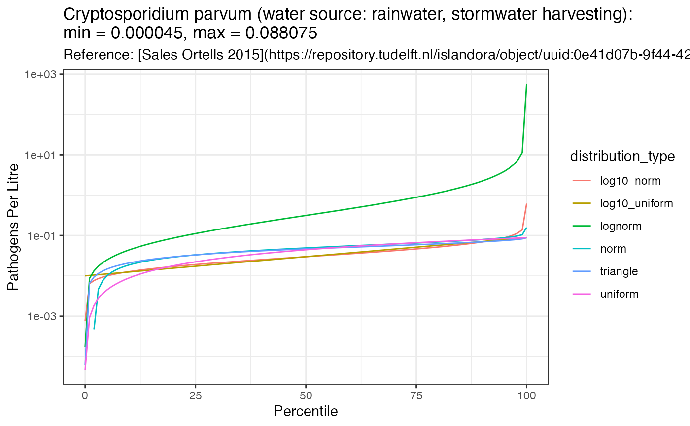
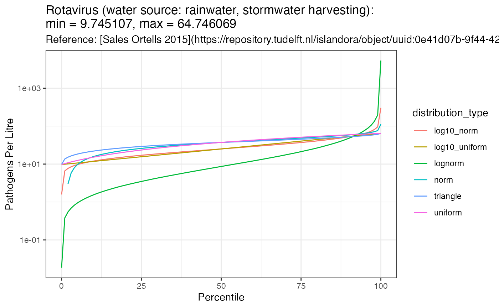
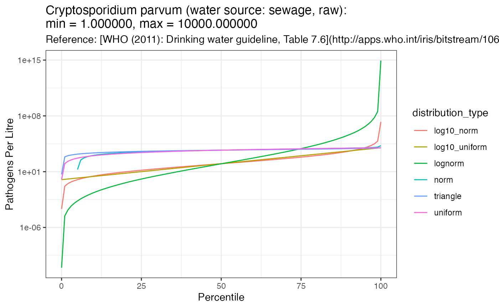
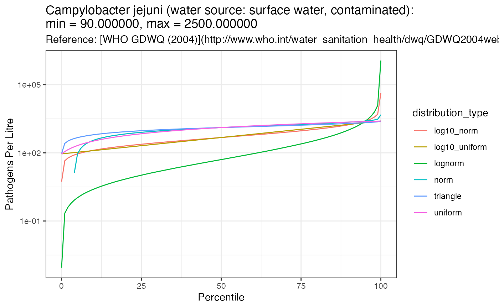
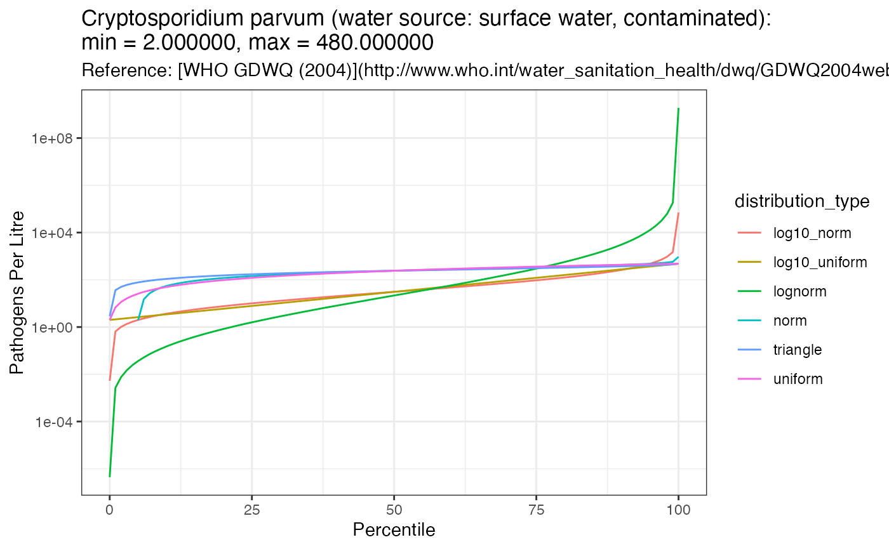
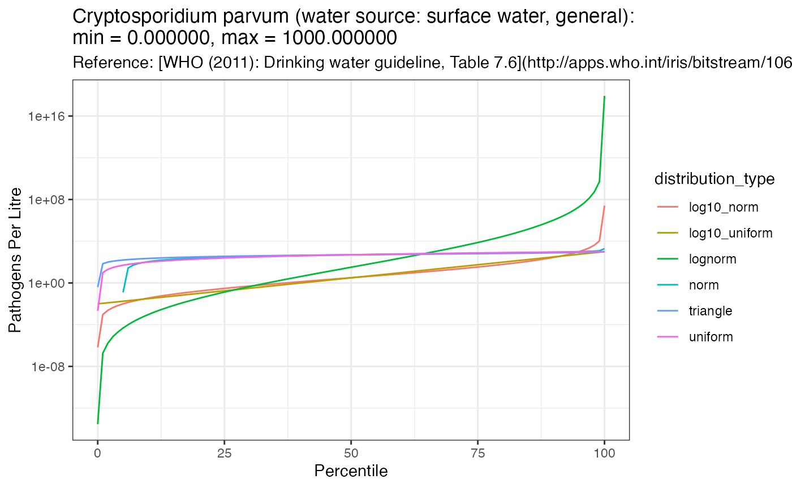
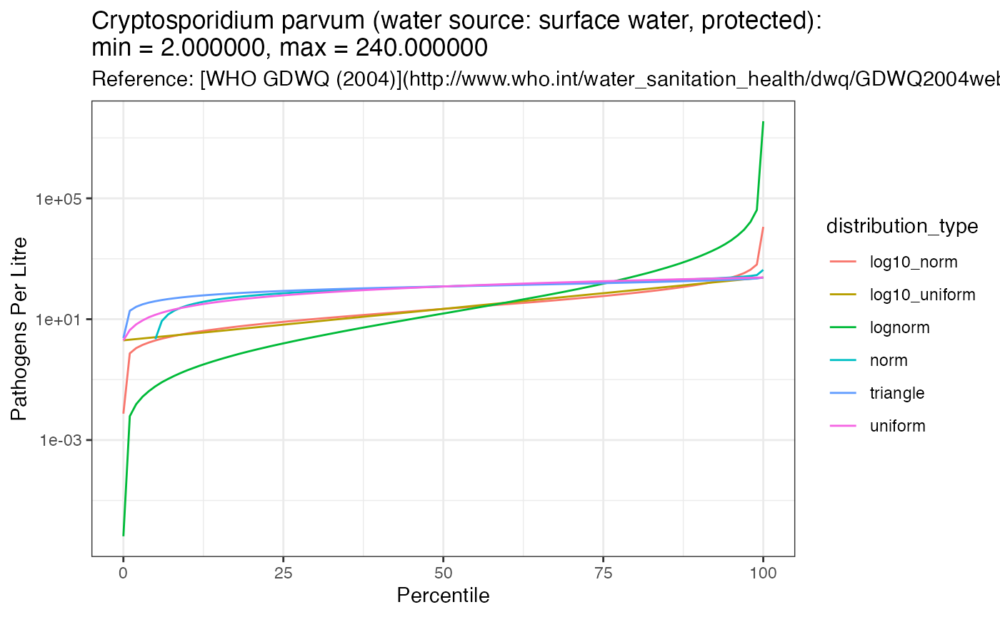
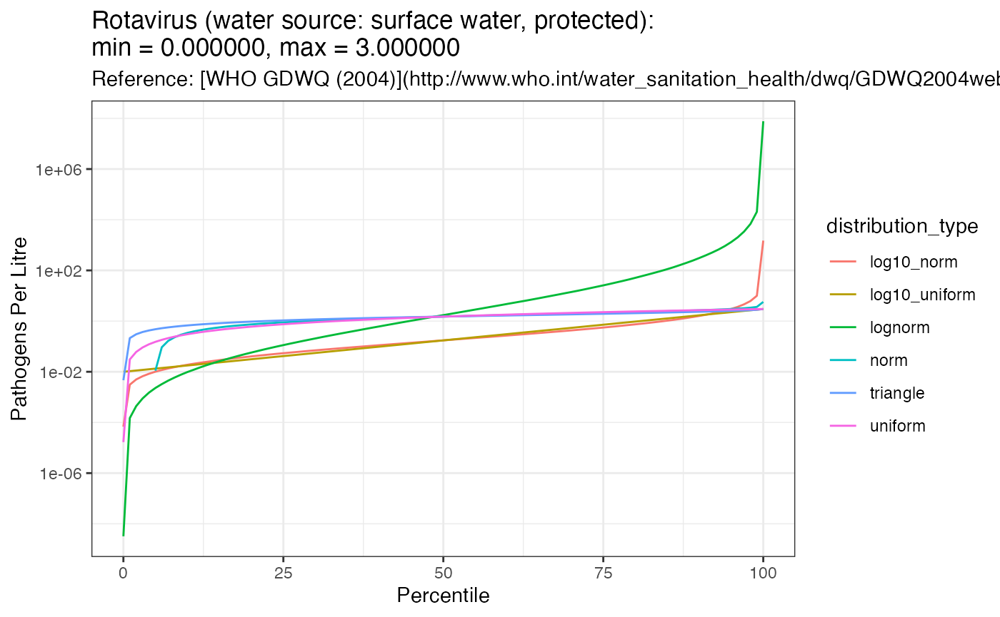

Inflow: Test Random Distributions
Michael Rustler
18 March, 2019
Source:vignettes/test_random_distributions_inflow.Rmd
test_random_distributions_inflow.Rmd1 Installation
if(FALSE) {
Sys.setenv(GITHUB_PAT = "mysecret_access_token")
install.packages("remotes", repos = "https://cloud.r-project.org")
library(remotes)
remotes::install_github("r-lib/remotes@18c7302637053faf21c5b025e1e9243962db1bdc")
remotes::install_github("KWB-R/kwb.qmra")
remotes::install_github("KWB-R/qmra.db")
}
## Load packages
library(kwb.qmra)
library(qmra.db)
library(ggplot2)
library(tibble)
library(sessioninfo)
library(stringi)2 Import data from “qmra.db”
See: https://github.com/KWB-R/qmra.db/tree/master/inst/database
create_inflow_metadata <- function(csv_dir = system.file("database/qmra-db_accdb",
package = "qmra.db")) {
paths_list <- list(
csv_dir = system.file("database/qmra-db_accdb", package = "qmra.db"),
inflow = "<csv_dir>/tbl_inflow.csv",
pathogen = "<csv_dir>/tbl_pathogen.csv",
pathogen_group = "<csv_dir>/tbl_pathogenGroup.csv",
references = "<csv_dir>/tbl_reference.csv",
water_source = "<csv_dir>/tbl_waterSource.csv"
)
paths <- kwb.utils::resolve(paths_list)
inflow <- readr::read_csv(file = paths$inflow)
pathogen <- readr::read_csv(file = paths$pathogen)
pathogen_group <- readr::read_csv(file = paths$pathogen_group)
references <- readr::read_csv(file = paths$references)
water_source <- readr::read_csv(file = paths$water_source)
inflow_metadata <- inflow %>%
dplyr::left_join(pathogen) %>%
dplyr::left_join(pathogen_group) %>%
dplyr::left_join(water_source) %>%
dplyr::left_join(references) %>%
dplyr::arrange(.data$WaterSourceName,
.data$PathogenGroup,
.data$PathogenName,
.data$ReferenceName) %>%
dplyr::mutate(row_id = 1:dplyr::n())
}
inflow_metadata <- create_inflow_metadata()
#> Parsed with column specification:
#> cols(
#> PathogenID = col_double(),
#> ReferenceID = col_double(),
#> WaterSourceID = col_double(),
#> min = col_double(),
#> max = col_double(),
#> distribution = col_character(),
#> mean = col_double(),
#> alpha = col_logical(),
#> beta = col_logical(),
#> PathogenInReference = col_character(),
#> Notes = col_character()
#> )
#> Parsed with column specification:
#> cols(
#> PathogenID = col_double(),
#> PathogenName = col_character(),
#> PathogenDescription = col_logical(),
#> PathogenGroupID = col_double()
#> )
#> Parsed with column specification:
#> cols(
#> PathogenGroupID = col_double(),
#> PathogenGroup = col_character(),
#> PathogenGroupDescription = col_character(),
#> DefaultPathogenID = col_double()
#> )
#> Parsed with column specification:
#> cols(
#> ReferenceID = col_double(),
#> ReferenceName = col_character(),
#> ReferenceLink = col_character()
#> )
#> Parsed with column specification:
#> cols(
#> WaterSourceID = col_double(),
#> WaterSourceName = col_character(),
#> WaterSourceDescription = col_character()
#> )
#> Joining, by = "PathogenID"
#> Joining, by = "PathogenGroupID"
#> Joining, by = "WaterSourceID"
#> Joining, by = "ReferenceID"
head(inflow_metadata)
#> # A tibble: 6 x 22
#> PathogenID ReferenceID WaterSourceID min max distribution mean alpha
#> <dbl> <dbl> <dbl> <dbl> <dbl> <chr> <dbl> <lgl>
#> 1 3 43 7 0 10 log10_norm NA NA
#> 2 34 43 7 0 1 log10_norm NA NA
#> 3 32 43 7 0 2 log10_norm NA NA
#> 4 3 44 5 0 24 log10_norm 3 NA
#> 5 34 44 5 0 0.19 log10_norm 0.06 NA
#> 6 32 44 5 0 0.01 log10_norm NA NA
#> # … with 14 more variables: beta <lgl>, PathogenInReference <chr>,
#> # Notes <chr>, PathogenName <chr>, PathogenDescription <lgl>,
#> # PathogenGroupID <dbl>, PathogenGroup <chr>,
#> # PathogenGroupDescription <chr>, DefaultPathogenID <dbl>,
#> # WaterSourceName <chr>, WaterSourceDescription <chr>,
#> # ReferenceName <chr>, ReferenceLink <chr>, row_id <int>3 Test
3.1 Define Checking Function
check_inflow_distribution <- function(inflow_metadata,
### for valid "type" parameter values
### see: https://kwb-r.github.io/kwb.qmra/reference/create_random_distribution.html
type = "log10_norm",
number_of_repeatings = 1000,
number_of_events = 365,
dbg = TRUE) {
metadata <- inflow_metadata %>%
dplyr::mutate(row_id = 1:dplyr::n()) %>%
dplyr::mutate(distribution_type = type)
percentiles_list <- lapply(seq_len(nrow(inflow_metadata)), FUN = function(i) {
sel_dat <- inflow_metadata[i, ]
print(sprintf("Water source: %s, Pathogen: %s, Reference: %s, Min: %f, Max: %f",
stringi::stri_enc_toutf8(sel_dat$WaterSourceName),
stringi::stri_enc_toutf8(sel_dat$PathogenName),
stringi::stri_enc_toutf8(sel_dat$ReferenceName),
sel_dat$min,
sel_dat$max))
inflow <- kwb.qmra::create_random_distribution(type = type,
number_of_repeatings = number_of_repeatings,
number_of_events = number_of_events,
min = sel_dat$min,
max = sel_dat$max,
debug = dbg)
## Go ahead even if errors occur
try(tibble::enframe(quantile(inflow$events$values, probs = seq(0, 1, by = 0.01))))
})
dplyr::bind_rows(percentiles_list, .id = "row_id") %>%
dplyr::rename(percentile = name) %>%
dplyr::mutate(percentile = as.numeric(stringr::str_remove(.data$percentile, "%")),
distribution_type = type)
}3.2 Define Plot Function
plot_percentiles <- function(inflow_stats, inflow_metadata) {
n <- unique(inflow_stats$row_id)
for (i in seq_along(n)) {
sel_inflow_stats <- inflow_stats[inflow_stats$row_id == i,]
metadata <- inflow_metadata[inflow_metadata$row_id == i, ]
gg <- ggplot(sel_inflow_stats, aes_string(x = "percentile",
y = "value",
col = "distribution_type")) +
ggplot2::scale_y_log10() +
labs(title = sprintf("%s (water source: %s):\nmin = %f, max = %f",
stringi::stri_enc_toutf8(metadata$PathogenName),
stringi::stri_enc_toutf8(metadata$WaterSourceName),
metadata$min,
metadata$max),
subtitle = sprintf("Reference: [%s](%s)",
stringi::stri_enc_toutf8(metadata$ReferenceName),
stringi::stri_enc_toutf8(metadata$ReferenceLink)),
x = "Percentile",
y = "Pathogens Per Litre") +
geom_line() +
theme_bw()
print(gg)
}
}3.4 Run Checking Function And Plot
inflow_stats_list <- lapply(c("log10_norm", "log10_uniform", "lognorm", "norm", "uniform", "triangle"),
function(type) {
check_inflow_distribution(inflow_metadata,
type = type)
})
#> [1] "Water source: groundwater, Pathogen: Campylobacter jejuni, Reference: WHO GDWQ (2004), Min: 0.000000, Max: 10.000000"
#> Create 1000 random distribution(s): 10^rnorm(with parameters n: 365, mean: -0.500000, sd: 0.911935)
#> [1] "Water source: groundwater, Pathogen: Cryptosporidium parvum, Reference: WHO GDWQ (2004), Min: 0.000000, Max: 1.000000"
#> Create 1000 random distribution(s): 10^rnorm(with parameters n: 365, mean: -1.000000, sd: 0.607957)
#> [1] "Water source: groundwater, Pathogen: Rotavirus, Reference: WHO GDWQ (2004), Min: 0.000000, Max: 2.000000"
#> Create 1000 random distribution(s): 10^rnorm(with parameters n: 365, mean: -0.849485, sd: 0.699463)
#> [1] "Water source: rainwater, rooftop harvesting, Pathogen: Campylobacter jejuni, Reference: KWR 2016.081, Min: 0.000000, Max: 24.000000"
#> Create 1000 random distribution(s): 10^rnorm(with parameters n: 365, mean: -0.309894, sd: 1.027511)
#> [1] "Water source: rainwater, rooftop harvesting, Pathogen: Cryptosporidium parvum, Reference: KWR 2016.081, Min: 0.000000, Max: 0.190000"
#> Create 1000 random distribution(s): 10^rnorm(with parameters n: 365, mean: -1.721246, sd: 0.607957)
#> [1] "Water source: rainwater, rooftop harvesting, Pathogen: Rotavirus, Reference: KWR 2016.081, Min: 0.000000, Max: 0.010000"
#> Create 1000 random distribution(s): 10^rnorm(with parameters n: 365, mean: -3.000000, sd: 0.607957)
#> [1] "Water source: rainwater, stormwater harvesting, Pathogen: Campylobacter jejuni, Reference: Sales Ortells 2015, Min: 13.869428, Max: 287.039359"
#> Create 1000 random distribution(s): 10^rnorm(with parameters n: 365, mean: 1.800000, sd: 0.400000)
#> [1] "Water source: rainwater, stormwater harvesting, Pathogen: Cryptosporidium parvum, Reference: Sales Ortells 2015, Min: 0.000045, Max: 0.088075"
#> Create 1000 random distribution(s): 10^rnorm(with parameters n: 365, mean: -1.527573, sd: 0.287215)
#> [1] "Water source: rainwater, stormwater harvesting, Pathogen: Rotavirus, Reference: Sales Ortells 2015, Min: 9.745107, Max: 64.746069"
#> Create 1000 random distribution(s): 10^rnorm(with parameters n: 365, mean: 1.400000, sd: 0.250000)
#> [1] "Water source: sewage, raw, Pathogen: Campylobacter jejuni, Reference: WHO (2011): Drinking water guideline, Table 7.6, Min: 100.000000, Max: 1000000.000000"
#> Create 1000 random distribution(s): 10^rnorm(with parameters n: 365, mean: 4.000000, sd: 1.215914)
#> [1] "Water source: sewage, raw, Pathogen: Escherichia coli, Reference: WHO (2011): Drinking water guideline, Table 7.6, Min: 1000000.000000, Max: 10000000000.000000"
#> Create 1000 random distribution(s): 10^rnorm(with parameters n: 365, mean: 8.000000, sd: 1.215914)
#> [1] "Water source: sewage, raw, Pathogen: Vibrio cholerae, Reference: WHO (2011): Drinking water guideline, Table 7.6, Min: 100.000000, Max: 1000000.000000"
#> Create 1000 random distribution(s): 10^rnorm(with parameters n: 365, mean: 4.000000, sd: 1.215914)
#> [1] "Water source: sewage, raw, Pathogen: Cryptosporidium parvum, Reference: WHO (2011): Drinking water guideline, Table 7.6, Min: 1.000000, Max: 10000.000000"
#> Create 1000 random distribution(s): 10^rnorm(with parameters n: 365, mean: 2.000000, sd: 1.215914)
#> [1] "Water source: sewage, raw, Pathogen: Giardia duodenalis, Reference: WHO (2011): Drinking water guideline, Table 7.6, Min: 1.000000, Max: 10000.000000"
#> Create 1000 random distribution(s): 10^rnorm(with parameters n: 365, mean: 2.000000, sd: 1.215914)
#> [1] "Water source: sewage, raw, Pathogen: Enteroviruses, Reference: WHO (2011): Drinking water guideline, Table 7.6, Min: 1.000000, Max: 1000.000000"
#> Create 1000 random distribution(s): 10^rnorm(with parameters n: 365, mean: 1.500000, sd: 0.911935)
#> [1] "Water source: sewage, raw, Pathogen: Rotavirus, Reference: WHO (2011): Drinking water guideline, Table 7.6, Min: 50.000000, Max: 5000.000000"
#> Create 1000 random distribution(s): 10^rnorm(with parameters n: 365, mean: 2.698970, sd: 0.607957)
#> [1] "Water source: sewage, treated, Pathogen: Campylobacter jejuni, Reference: WHO (2006) safe use wastewater V2, Min: 0.001000, Max: 1000.000000"
#> Create 1000 random distribution(s): 10^rnorm(with parameters n: 365, mean: 0.000000, sd: 1.823870)
#> [1] "Water source: sewage, treated, Pathogen: Cryptosporidium parvum, Reference: WHO (2006) safe use wastewater V2, Min: 0.010000, Max: 10000.000000"
#> Create 1000 random distribution(s): 10^rnorm(with parameters n: 365, mean: 1.000000, sd: 1.823870)
#> [1] "Water source: sewage, treated, Pathogen: Rotavirus, Reference: WHO (2006) safe use wastewater V2, Min: 0.100000, Max: 1000.000000"
#> Create 1000 random distribution(s): 10^rnorm(with parameters n: 365, mean: 1.000000, sd: 1.215914)
#> [1] "Water source: surface water, contaminated, Pathogen: Campylobacter jejuni, Reference: WHO GDWQ (2004), Min: 90.000000, Max: 2500.000000"
#> Create 1000 random distribution(s): 10^rnorm(with parameters n: 365, mean: 2.676091, sd: 0.438853)
#> [1] "Water source: surface water, contaminated, Pathogen: Cryptosporidium parvum, Reference: WHO GDWQ (2004), Min: 2.000000, Max: 480.000000"
#> Create 1000 random distribution(s): 10^rnorm(with parameters n: 365, mean: 1.491136, sd: 0.723533)
#> [1] "Water source: surface water, contaminated, Pathogen: Rotavirus, Reference: WHO GDWQ (2004), Min: 30.000000, Max: 60.000000"
#> Create 1000 random distribution(s): 10^rnorm(with parameters n: 365, mean: 1.627636, sd: 0.091507)
#> [1] "Water source: surface water, general, Pathogen: Campylobacter jejuni, Reference: WHO (2011): Drinking water guideline, Table 7.6, Min: 100.000000, Max: 10000.000000"
#> Create 1000 random distribution(s): 10^rnorm(with parameters n: 365, mean: 3.000000, sd: 0.607957)
#> [1] "Water source: surface water, general, Pathogen: Cryptosporidium parvum, Reference: WHO (2011): Drinking water guideline, Table 7.6, Min: 0.000000, Max: 1000.000000"
#> Create 1000 random distribution(s): 10^rnorm(with parameters n: 365, mean: 0.500000, sd: 1.519892)
#> [1] "Water source: surface water, general, Pathogen: Rotavirus, Reference: WHO (2011): Drinking water guideline, Table 7.6, Min: 0.010000, Max: 100.000000"
#> Create 1000 random distribution(s): 10^rnorm(with parameters n: 365, mean: 0.000000, sd: 1.215914)
#> [1] "Water source: surface water, protected, Pathogen: Campylobacter jejuni, Reference: WHO GDWQ (2004), Min: 0.000000, Max: 1100.000000"
#> Create 1000 random distribution(s): 10^rnorm(with parameters n: 365, mean: 0.520696, sd: 1.532475)
#> [1] "Water source: surface water, protected, Pathogen: Cryptosporidium parvum, Reference: WHO GDWQ (2004), Min: 2.000000, Max: 240.000000"
#> Create 1000 random distribution(s): 10^rnorm(with parameters n: 365, mean: 1.340621, sd: 0.632026)
#> [1] "Water source: surface water, protected, Pathogen: Rotavirus, Reference: WHO GDWQ (2004), Min: 0.000000, Max: 3.000000"
#> Create 1000 random distribution(s): 10^rnorm(with parameters n: 365, mean: -0.761439, sd: 0.752991)
#> [1] "Water source: groundwater, Pathogen: Campylobacter jejuni, Reference: WHO GDWQ (2004), Min: 0.000000, Max: 10.000000"
#> Create 1000 random distribution(s): 10^runif(with parameters n: 365, min: -2.000000, max: 1.000000)
#> [1] "Water source: groundwater, Pathogen: Cryptosporidium parvum, Reference: WHO GDWQ (2004), Min: 0.000000, Max: 1.000000"
#> Create 1000 random distribution(s): 10^runif(with parameters n: 365, min: -2.000000, max: 0.000000)
#> [1] "Water source: groundwater, Pathogen: Rotavirus, Reference: WHO GDWQ (2004), Min: 0.000000, Max: 2.000000"
#> Create 1000 random distribution(s): 10^runif(with parameters n: 365, min: -2.000000, max: 0.301030)
#> [1] "Water source: rainwater, rooftop harvesting, Pathogen: Campylobacter jejuni, Reference: KWR 2016.081, Min: 0.000000, Max: 24.000000"
#> Create 1000 random distribution(s): 10^runif(with parameters n: 365, min: -2.000000, max: 1.380211)
#> [1] "Water source: rainwater, rooftop harvesting, Pathogen: Cryptosporidium parvum, Reference: KWR 2016.081, Min: 0.000000, Max: 0.190000"
#> Create 1000 random distribution(s): 10^runif(with parameters n: 365, min: -2.721246, max: -0.721246)
#> [1] "Water source: rainwater, rooftop harvesting, Pathogen: Rotavirus, Reference: KWR 2016.081, Min: 0.000000, Max: 0.010000"
#> Create 1000 random distribution(s): 10^runif(with parameters n: 365, min: -4.000000, max: -2.000000)
#> [1] "Water source: rainwater, stormwater harvesting, Pathogen: Campylobacter jejuni, Reference: Sales Ortells 2015, Min: 13.869428, Max: 287.039359"
#> Create 1000 random distribution(s): 10^runif(with parameters n: 365, min: 1.142059, max: 2.457941)
#> [1] "Water source: rainwater, stormwater harvesting, Pathogen: Cryptosporidium parvum, Reference: Sales Ortells 2015, Min: 0.000045, Max: 0.088075"
#> Create 1000 random distribution(s): 10^runif(with parameters n: 365, min: -2.000000, max: -1.055146)
#> [1] "Water source: rainwater, stormwater harvesting, Pathogen: Rotavirus, Reference: Sales Ortells 2015, Min: 9.745107, Max: 64.746069"
#> Create 1000 random distribution(s): 10^runif(with parameters n: 365, min: 0.988787, max: 1.811213)
#> [1] "Water source: sewage, raw, Pathogen: Campylobacter jejuni, Reference: WHO (2011): Drinking water guideline, Table 7.6, Min: 100.000000, Max: 1000000.000000"
#> Create 1000 random distribution(s): 10^runif(with parameters n: 365, min: 2.000000, max: 6.000000)
#> [1] "Water source: sewage, raw, Pathogen: Escherichia coli, Reference: WHO (2011): Drinking water guideline, Table 7.6, Min: 1000000.000000, Max: 10000000000.000000"
#> Create 1000 random distribution(s): 10^runif(with parameters n: 365, min: 6.000000, max: 10.000000)
#> [1] "Water source: sewage, raw, Pathogen: Vibrio cholerae, Reference: WHO (2011): Drinking water guideline, Table 7.6, Min: 100.000000, Max: 1000000.000000"
#> Create 1000 random distribution(s): 10^runif(with parameters n: 365, min: 2.000000, max: 6.000000)
#> [1] "Water source: sewage, raw, Pathogen: Cryptosporidium parvum, Reference: WHO (2011): Drinking water guideline, Table 7.6, Min: 1.000000, Max: 10000.000000"
#> Create 1000 random distribution(s): 10^runif(with parameters n: 365, min: 0.000000, max: 4.000000)
#> [1] "Water source: sewage, raw, Pathogen: Giardia duodenalis, Reference: WHO (2011): Drinking water guideline, Table 7.6, Min: 1.000000, Max: 10000.000000"
#> Create 1000 random distribution(s): 10^runif(with parameters n: 365, min: 0.000000, max: 4.000000)
#> [1] "Water source: sewage, raw, Pathogen: Enteroviruses, Reference: WHO (2011): Drinking water guideline, Table 7.6, Min: 1.000000, Max: 1000.000000"
#> Create 1000 random distribution(s): 10^runif(with parameters n: 365, min: 0.000000, max: 3.000000)
#> [1] "Water source: sewage, raw, Pathogen: Rotavirus, Reference: WHO (2011): Drinking water guideline, Table 7.6, Min: 50.000000, Max: 5000.000000"
#> Create 1000 random distribution(s): 10^runif(with parameters n: 365, min: 1.698970, max: 3.698970)
#> [1] "Water source: sewage, treated, Pathogen: Campylobacter jejuni, Reference: WHO (2006) safe use wastewater V2, Min: 0.001000, Max: 1000.000000"
#> Create 1000 random distribution(s): 10^runif(with parameters n: 365, min: -3.000000, max: 3.000000)
#> [1] "Water source: sewage, treated, Pathogen: Cryptosporidium parvum, Reference: WHO (2006) safe use wastewater V2, Min: 0.010000, Max: 10000.000000"
#> Create 1000 random distribution(s): 10^runif(with parameters n: 365, min: -2.000000, max: 4.000000)
#> [1] "Water source: sewage, treated, Pathogen: Rotavirus, Reference: WHO (2006) safe use wastewater V2, Min: 0.100000, Max: 1000.000000"
#> Create 1000 random distribution(s): 10^runif(with parameters n: 365, min: -1.000000, max: 3.000000)
#> [1] "Water source: surface water, contaminated, Pathogen: Campylobacter jejuni, Reference: WHO GDWQ (2004), Min: 90.000000, Max: 2500.000000"
#> Create 1000 random distribution(s): 10^runif(with parameters n: 365, min: 1.954243, max: 3.397940)
#> [1] "Water source: surface water, contaminated, Pathogen: Cryptosporidium parvum, Reference: WHO GDWQ (2004), Min: 2.000000, Max: 480.000000"
#> Create 1000 random distribution(s): 10^runif(with parameters n: 365, min: 0.301030, max: 2.681241)
#> [1] "Water source: surface water, contaminated, Pathogen: Rotavirus, Reference: WHO GDWQ (2004), Min: 30.000000, Max: 60.000000"
#> Create 1000 random distribution(s): 10^runif(with parameters n: 365, min: 1.477121, max: 1.778151)
#> [1] "Water source: surface water, general, Pathogen: Campylobacter jejuni, Reference: WHO (2011): Drinking water guideline, Table 7.6, Min: 100.000000, Max: 10000.000000"
#> Create 1000 random distribution(s): 10^runif(with parameters n: 365, min: 2.000000, max: 4.000000)
#> [1] "Water source: surface water, general, Pathogen: Cryptosporidium parvum, Reference: WHO (2011): Drinking water guideline, Table 7.6, Min: 0.000000, Max: 1000.000000"
#> Create 1000 random distribution(s): 10^runif(with parameters n: 365, min: -2.000000, max: 3.000000)
#> [1] "Water source: surface water, general, Pathogen: Rotavirus, Reference: WHO (2011): Drinking water guideline, Table 7.6, Min: 0.010000, Max: 100.000000"
#> Create 1000 random distribution(s): 10^runif(with parameters n: 365, min: -2.000000, max: 2.000000)
#> [1] "Water source: surface water, protected, Pathogen: Campylobacter jejuni, Reference: WHO GDWQ (2004), Min: 0.000000, Max: 1100.000000"
#> Create 1000 random distribution(s): 10^runif(with parameters n: 365, min: -2.000000, max: 3.041393)
#> [1] "Water source: surface water, protected, Pathogen: Cryptosporidium parvum, Reference: WHO GDWQ (2004), Min: 2.000000, Max: 240.000000"
#> Create 1000 random distribution(s): 10^runif(with parameters n: 365, min: 0.301030, max: 2.380211)
#> [1] "Water source: surface water, protected, Pathogen: Rotavirus, Reference: WHO GDWQ (2004), Min: 0.000000, Max: 3.000000"
#> Create 1000 random distribution(s): 10^runif(with parameters n: 365, min: -2.000000, max: 0.477121)
#> [1] "Water source: groundwater, Pathogen: Campylobacter jejuni, Reference: WHO GDWQ (2004), Min: 0.000000, Max: 10.000000"
#> Create 1000 random distribution(s): lognorm (with parameters n: 365, meanlog: 1.151792, sdlog: 4.884521)
#> [1] "Water source: groundwater, Pathogen: Cryptosporidium parvum, Reference: WHO GDWQ (2004), Min: 0.000000, Max: 1.000000"
#> Create 1000 random distribution(s): lognorm (with parameters n: 365, meanlog: 0.004975, sdlog: 3.256347)
#> [1] "Water source: groundwater, Pathogen: Rotavirus, Reference: WHO GDWQ (2004), Min: 0.000000, Max: 2.000000"
#> Create 1000 random distribution(s): lognorm (with parameters n: 365, meanlog: 0.349067, sdlog: 3.746476)
#> [1] "Water source: rainwater, rooftop harvesting, Pathogen: Campylobacter jejuni, Reference: KWR 2016.081, Min: 0.000000, Max: 24.000000"
#> Create 1000 random distribution(s): lognorm (with parameters n: 365, meanlog: 1.589235, sdlog: 5.503570)
#> [1] "Water source: rainwater, rooftop harvesting, Pathogen: Cryptosporidium parvum, Reference: KWR 2016.081, Min: 0.000000, Max: 0.190000"
#> Create 1000 random distribution(s): lognorm (with parameters n: 365, meanlog: -0.825390, sdlog: 3.256347)
#> [1] "Water source: rainwater, rooftop harvesting, Pathogen: Rotavirus, Reference: KWR 2016.081, Min: 0.000000, Max: 0.010000"
#> Create 1000 random distribution(s): lognorm (with parameters n: 365, meanlog: -2.297610, sdlog: 3.256347)
#> [1] "Water source: rainwater, stormwater harvesting, Pathogen: Campylobacter jejuni, Reference: Sales Ortells 2015, Min: 13.869428, Max: 287.039359"
#> Create 1000 random distribution(s): lognorm (with parameters n: 365, meanlog: 2.853404, sdlog: 2.142486)
#> [1] "Water source: rainwater, stormwater harvesting, Pathogen: Cryptosporidium parvum, Reference: Sales Ortells 2015, Min: 0.000045, Max: 0.088075"
#> Create 1000 random distribution(s): lognorm (with parameters n: 365, meanlog: -1.161010, sdlog: 1.538386)
#> [1] "Water source: rainwater, stormwater harvesting, Pathogen: Rotavirus, Reference: Sales Ortells 2015, Min: 9.745107, Max: 64.746069"
#> Create 1000 random distribution(s): lognorm (with parameters n: 365, meanlog: 2.155340, sdlog: 1.339054)
#> [1] "Water source: sewage, raw, Pathogen: Campylobacter jejuni, Reference: WHO (2011): Drinking water guideline, Table 7.6, Min: 100.000000, Max: 1000000.000000"
#> Create 1000 random distribution(s): lognorm (with parameters n: 365, meanlog: 6.907805, sdlog: 6.512694)
#> [1] "Water source: sewage, raw, Pathogen: Escherichia coli, Reference: WHO (2011): Drinking water guideline, Table 7.6, Min: 1000000.000000, Max: 10000000000.000000"
#> Create 1000 random distribution(s): lognorm (with parameters n: 365, meanlog: 11.512975, sdlog: 6.512694)
#> [1] "Water source: sewage, raw, Pathogen: Vibrio cholerae, Reference: WHO (2011): Drinking water guideline, Table 7.6, Min: 100.000000, Max: 1000000.000000"
#> Create 1000 random distribution(s): lognorm (with parameters n: 365, meanlog: 6.907805, sdlog: 6.512694)
#> [1] "Water source: sewage, raw, Pathogen: Cryptosporidium parvum, Reference: WHO (2011): Drinking water guideline, Table 7.6, Min: 1.000000, Max: 10000.000000"
#> Create 1000 random distribution(s): lognorm (with parameters n: 365, meanlog: 4.605220, sdlog: 6.512694)
#> [1] "Water source: sewage, raw, Pathogen: Giardia duodenalis, Reference: WHO (2011): Drinking water guideline, Table 7.6, Min: 1.000000, Max: 10000.000000"
#> Create 1000 random distribution(s): lognorm (with parameters n: 365, meanlog: 4.605220, sdlog: 6.512694)
#> [1] "Water source: sewage, raw, Pathogen: Enteroviruses, Reference: WHO (2011): Drinking water guideline, Table 7.6, Min: 1.000000, Max: 1000.000000"
#> Create 1000 random distribution(s): lognorm (with parameters n: 365, meanlog: 3.454377, sdlog: 4.884521)
#> [1] "Water source: sewage, raw, Pathogen: Rotavirus, Reference: WHO (2011): Drinking water guideline, Table 7.6, Min: 50.000000, Max: 5000.000000"
#> Create 1000 random distribution(s): lognorm (with parameters n: 365, meanlog: 4.263572, sdlog: 3.256347)
#> [1] "Water source: sewage, treated, Pathogen: Campylobacter jejuni, Reference: WHO (2006) safe use wastewater V2, Min: 0.001000, Max: 1000.000000"
#> Create 1000 random distribution(s): lognorm (with parameters n: 365, meanlog: 3.453878, sdlog: 9.769041)
#> [1] "Water source: sewage, treated, Pathogen: Cryptosporidium parvum, Reference: WHO (2006) safe use wastewater V2, Min: 0.010000, Max: 10000.000000"
#> Create 1000 random distribution(s): lognorm (with parameters n: 365, meanlog: 4.605171, sdlog: 9.769041)
#> [1] "Water source: sewage, treated, Pathogen: Rotavirus, Reference: WHO (2006) safe use wastewater V2, Min: 0.100000, Max: 1000.000000"
#> Create 1000 random distribution(s): lognorm (with parameters n: 365, meanlog: 3.453928, sdlog: 6.512694)
#> [1] "Water source: surface water, contaminated, Pathogen: Campylobacter jejuni, Reference: WHO GDWQ (2004), Min: 90.000000, Max: 2500.000000"
#> Create 1000 random distribution(s): lognorm (with parameters n: 365, meanlog: 3.929707, sdlog: 2.350590)
#> [1] "Water source: surface water, contaminated, Pathogen: Cryptosporidium parvum, Reference: WHO GDWQ (2004), Min: 2.000000, Max: 480.000000"
#> Create 1000 random distribution(s): lognorm (with parameters n: 365, meanlog: 3.088972, sdlog: 3.875397)
#> [1] "Water source: surface water, contaminated, Pathogen: Rotavirus, Reference: WHO GDWQ (2004), Min: 30.000000, Max: 60.000000"
#> Create 1000 random distribution(s): lognorm (with parameters n: 365, meanlog: 2.249905, sdlog: 0.490129)
#> [1] "Water source: surface water, general, Pathogen: Campylobacter jejuni, Reference: WHO (2011): Drinking water guideline, Table 7.6, Min: 100.000000, Max: 10000.000000"
#> Create 1000 random distribution(s): lognorm (with parameters n: 365, meanlog: 4.610145, sdlog: 3.256347)
#> [1] "Water source: surface water, general, Pathogen: Cryptosporidium parvum, Reference: WHO (2011): Drinking water guideline, Table 7.6, Min: 0.000000, Max: 1000.000000"
#> Create 1000 random distribution(s): lognorm (with parameters n: 365, meanlog: 3.453883, sdlog: 8.140868)
#> [1] "Water source: surface water, general, Pathogen: Rotavirus, Reference: WHO (2011): Drinking water guideline, Table 7.6, Min: 0.010000, Max: 100.000000"
#> Create 1000 random distribution(s): lognorm (with parameters n: 365, meanlog: 2.302635, sdlog: 6.512694)
#> [1] "Water source: surface water, protected, Pathogen: Campylobacter jejuni, Reference: WHO GDWQ (2004), Min: 0.000000, Max: 1100.000000"
#> Create 1000 random distribution(s): lognorm (with parameters n: 365, meanlog: 3.501537, sdlog: 8.208262)
#> [1] "Water source: surface water, protected, Pathogen: Cryptosporidium parvum, Reference: WHO GDWQ (2004), Min: 2.000000, Max: 240.000000"
#> Create 1000 random distribution(s): lognorm (with parameters n: 365, meanlog: 2.744469, sdlog: 3.385268)
#> [1] "Water source: surface water, protected, Pathogen: Rotavirus, Reference: WHO GDWQ (2004), Min: 0.000000, Max: 3.000000"
#> Create 1000 random distribution(s): lognorm (with parameters n: 365, meanlog: 0.550970, sdlog: 4.033183)
#> [1] "Water source: groundwater, Pathogen: Campylobacter jejuni, Reference: WHO GDWQ (2004), Min: 0.000000, Max: 10.000000"
#> Create 1000 random distribution(s): norm (with parameters n: 365, mean: 5.005000, sd: 3.036744)
#> [1] "Water source: groundwater, Pathogen: Cryptosporidium parvum, Reference: WHO GDWQ (2004), Min: 0.000000, Max: 1.000000"
#> Create 1000 random distribution(s): norm (with parameters n: 365, mean: 0.505000, sd: 0.300939)
#> [1] "Water source: groundwater, Pathogen: Rotavirus, Reference: WHO GDWQ (2004), Min: 0.000000, Max: 2.000000"
#> Create 1000 random distribution(s): norm (with parameters n: 365, mean: 1.005000, sd: 0.604917)
#> [1] "Water source: rainwater, rooftop harvesting, Pathogen: Campylobacter jejuni, Reference: KWR 2016.081, Min: 0.000000, Max: 24.000000"
#> Create 1000 random distribution(s): norm (with parameters n: 365, mean: 12.005000, sd: 7.292442)
#> [1] "Water source: rainwater, rooftop harvesting, Pathogen: Cryptosporidium parvum, Reference: KWR 2016.081, Min: 0.000000, Max: 0.190000"
#> Create 1000 random distribution(s): norm (with parameters n: 365, mean: 0.095950, sd: 0.057178)
#> [1] "Water source: rainwater, rooftop harvesting, Pathogen: Rotavirus, Reference: KWR 2016.081, Min: 0.000000, Max: 0.010000"
#> Create 1000 random distribution(s): norm (with parameters n: 365, mean: 0.005050, sd: 0.003009)
#> [1] "Water source: rainwater, stormwater harvesting, Pathogen: Campylobacter jejuni, Reference: Sales Ortells 2015, Min: 13.869428, Max: 287.039359"
#> Create 1000 random distribution(s): norm (with parameters n: 365, mean: 150.454393, sd: 83.037763)
#> [1] "Water source: rainwater, stormwater harvesting, Pathogen: Cryptosporidium parvum, Reference: Sales Ortells 2015, Min: 0.000045, Max: 0.088075"
#> Create 1000 random distribution(s): norm (with parameters n: 365, mean: 0.049038, sd: 0.023733)
#> [1] "Water source: rainwater, stormwater harvesting, Pathogen: Rotavirus, Reference: Sales Ortells 2015, Min: 9.745107, Max: 64.746069"
#> Create 1000 random distribution(s): norm (with parameters n: 365, mean: 37.245588, sd: 16.719105)
#> [1] "Water source: sewage, raw, Pathogen: Campylobacter jejuni, Reference: WHO (2011): Drinking water guideline, Table 7.6, Min: 100.000000, Max: 1000000.000000"
#> Create 1000 random distribution(s): norm (with parameters n: 365, mean: 500050.000000, sd: 303948.018114)
#> [1] "Water source: sewage, raw, Pathogen: Escherichia coli, Reference: WHO (2011): Drinking water guideline, Table 7.6, Min: 1000000.000000, Max: 10000000000.000000"
#> Create 1000 random distribution(s): norm (with parameters n: 365, mean: 5000500000.000000, sd: 3039480181.142891)
#> [1] "Water source: sewage, raw, Pathogen: Vibrio cholerae, Reference: WHO (2011): Drinking water guideline, Table 7.6, Min: 100.000000, Max: 1000000.000000"
#> Create 1000 random distribution(s): norm (with parameters n: 365, mean: 500050.000000, sd: 303948.018114)
#> [1] "Water source: sewage, raw, Pathogen: Cryptosporidium parvum, Reference: WHO (2011): Drinking water guideline, Table 7.6, Min: 1.000000, Max: 10000.000000"
#> Create 1000 random distribution(s): norm (with parameters n: 365, mean: 5000.500000, sd: 3039.480181)
#> [1] "Water source: sewage, raw, Pathogen: Giardia duodenalis, Reference: WHO (2011): Drinking water guideline, Table 7.6, Min: 1.000000, Max: 10000.000000"
#> Create 1000 random distribution(s): norm (with parameters n: 365, mean: 5000.500000, sd: 3039.480181)
#> [1] "Water source: sewage, raw, Pathogen: Enteroviruses, Reference: WHO (2011): Drinking water guideline, Table 7.6, Min: 1.000000, Max: 1000.000000"
#> Create 1000 random distribution(s): norm (with parameters n: 365, mean: 500.500000, sd: 303.674438)
#> [1] "Water source: sewage, raw, Pathogen: Rotavirus, Reference: WHO (2011): Drinking water guideline, Table 7.6, Min: 50.000000, Max: 5000.000000"
#> Create 1000 random distribution(s): norm (with parameters n: 365, mean: 2525.000000, sd: 1504.693159)
#> [1] "Water source: sewage, treated, Pathogen: Campylobacter jejuni, Reference: WHO (2006) safe use wastewater V2, Min: 0.001000, Max: 1000.000000"
#> Create 1000 random distribution(s): norm (with parameters n: 365, mean: 500.000500, sd: 303.978112)
#> [1] "Water source: sewage, treated, Pathogen: Cryptosporidium parvum, Reference: WHO (2006) safe use wastewater V2, Min: 0.010000, Max: 10000.000000"
#> Create 1000 random distribution(s): norm (with parameters n: 365, mean: 5000.005000, sd: 3039.781120)
#> [1] "Water source: sewage, treated, Pathogen: Rotavirus, Reference: WHO (2006) safe use wastewater V2, Min: 0.100000, Max: 1000.000000"
#> Create 1000 random distribution(s): norm (with parameters n: 365, mean: 500.050000, sd: 303.948018)
#> [1] "Water source: surface water, contaminated, Pathogen: Campylobacter jejuni, Reference: WHO GDWQ (2004), Min: 90.000000, Max: 2500.000000"
#> Create 1000 random distribution(s): norm (with parameters n: 365, mean: 1295.000000, sd: 732.587982)
#> [1] "Water source: surface water, contaminated, Pathogen: Cryptosporidium parvum, Reference: WHO GDWQ (2004), Min: 2.000000, Max: 480.000000"
#> Create 1000 random distribution(s): norm (with parameters n: 365, mean: 241.000000, sd: 145.301683)
#> [1] "Water source: surface water, contaminated, Pathogen: Rotavirus, Reference: WHO GDWQ (2004), Min: 30.000000, Max: 60.000000"
#> Create 1000 random distribution(s): norm (with parameters n: 365, mean: 45.000000, sd: 9.119352)
#> [1] "Water source: surface water, general, Pathogen: Campylobacter jejuni, Reference: WHO (2011): Drinking water guideline, Table 7.6, Min: 100.000000, Max: 10000.000000"
#> Create 1000 random distribution(s): norm (with parameters n: 365, mean: 5050.000000, sd: 3009.386318)
#> [1] "Water source: surface water, general, Pathogen: Cryptosporidium parvum, Reference: WHO (2011): Drinking water guideline, Table 7.6, Min: 0.000000, Max: 1000.000000"
#> Create 1000 random distribution(s): norm (with parameters n: 365, mean: 500.005000, sd: 303.975376)
#> [1] "Water source: surface water, general, Pathogen: Rotavirus, Reference: WHO (2011): Drinking water guideline, Table 7.6, Min: 0.010000, Max: 100.000000"
#> Create 1000 random distribution(s): norm (with parameters n: 365, mean: 50.005000, sd: 30.394802)
#> [1] "Water source: surface water, protected, Pathogen: Campylobacter jejuni, Reference: WHO GDWQ (2004), Min: 0.000000, Max: 1100.000000"
#> Create 1000 random distribution(s): norm (with parameters n: 365, mean: 550.005000, sd: 334.373218)
#> [1] "Water source: surface water, protected, Pathogen: Cryptosporidium parvum, Reference: WHO GDWQ (2004), Min: 2.000000, Max: 240.000000"
#> Create 1000 random distribution(s): norm (with parameters n: 365, mean: 121.000000, sd: 72.346863)
#> [1] "Water source: surface water, protected, Pathogen: Rotavirus, Reference: WHO GDWQ (2004), Min: 0.000000, Max: 3.000000"
#> Create 1000 random distribution(s): norm (with parameters n: 365, mean: 1.505000, sd: 0.908895)
#> [1] "Water source: groundwater, Pathogen: Campylobacter jejuni, Reference: WHO GDWQ (2004), Min: 0.000000, Max: 10.000000"
#> Create 1000 random distribution(s): uniform (with parameters n: 365, min: 0.000000, max: 10.000000)
#> [1] "Water source: groundwater, Pathogen: Cryptosporidium parvum, Reference: WHO GDWQ (2004), Min: 0.000000, Max: 1.000000"
#> Create 1000 random distribution(s): uniform (with parameters n: 365, min: 0.000000, max: 1.000000)
#> [1] "Water source: groundwater, Pathogen: Rotavirus, Reference: WHO GDWQ (2004), Min: 0.000000, Max: 2.000000"
#> Create 1000 random distribution(s): uniform (with parameters n: 365, min: 0.000000, max: 2.000000)
#> [1] "Water source: rainwater, rooftop harvesting, Pathogen: Campylobacter jejuni, Reference: KWR 2016.081, Min: 0.000000, Max: 24.000000"
#> Create 1000 random distribution(s): uniform (with parameters n: 365, min: 0.000000, max: 24.000000)
#> [1] "Water source: rainwater, rooftop harvesting, Pathogen: Cryptosporidium parvum, Reference: KWR 2016.081, Min: 0.000000, Max: 0.190000"
#> Create 1000 random distribution(s): uniform (with parameters n: 365, min: 0.000000, max: 0.190000)
#> [1] "Water source: rainwater, rooftop harvesting, Pathogen: Rotavirus, Reference: KWR 2016.081, Min: 0.000000, Max: 0.010000"
#> Create 1000 random distribution(s): uniform (with parameters n: 365, min: 0.000000, max: 0.010000)
#> [1] "Water source: rainwater, stormwater harvesting, Pathogen: Campylobacter jejuni, Reference: Sales Ortells 2015, Min: 13.869428, Max: 287.039359"
#> Create 1000 random distribution(s): uniform (with parameters n: 365, min: 13.869428, max: 287.039359)
#> [1] "Water source: rainwater, stormwater harvesting, Pathogen: Cryptosporidium parvum, Reference: Sales Ortells 2015, Min: 0.000045, Max: 0.088075"
#> Create 1000 random distribution(s): uniform (with parameters n: 365, min: 0.000045, max: 0.088075)
#> [1] "Water source: rainwater, stormwater harvesting, Pathogen: Rotavirus, Reference: Sales Ortells 2015, Min: 9.745107, Max: 64.746069"
#> Create 1000 random distribution(s): uniform (with parameters n: 365, min: 9.745107, max: 64.746069)
#> [1] "Water source: sewage, raw, Pathogen: Campylobacter jejuni, Reference: WHO (2011): Drinking water guideline, Table 7.6, Min: 100.000000, Max: 1000000.000000"
#> Create 1000 random distribution(s): uniform (with parameters n: 365, min: 100.000000, max: 1000000.000000)
#> [1] "Water source: sewage, raw, Pathogen: Escherichia coli, Reference: WHO (2011): Drinking water guideline, Table 7.6, Min: 1000000.000000, Max: 10000000000.000000"
#> Create 1000 random distribution(s): uniform (with parameters n: 365, min: 1000000.000000, max: 10000000000.000000)
#> [1] "Water source: sewage, raw, Pathogen: Vibrio cholerae, Reference: WHO (2011): Drinking water guideline, Table 7.6, Min: 100.000000, Max: 1000000.000000"
#> Create 1000 random distribution(s): uniform (with parameters n: 365, min: 100.000000, max: 1000000.000000)
#> [1] "Water source: sewage, raw, Pathogen: Cryptosporidium parvum, Reference: WHO (2011): Drinking water guideline, Table 7.6, Min: 1.000000, Max: 10000.000000"
#> Create 1000 random distribution(s): uniform (with parameters n: 365, min: 1.000000, max: 10000.000000)
#> [1] "Water source: sewage, raw, Pathogen: Giardia duodenalis, Reference: WHO (2011): Drinking water guideline, Table 7.6, Min: 1.000000, Max: 10000.000000"
#> Create 1000 random distribution(s): uniform (with parameters n: 365, min: 1.000000, max: 10000.000000)
#> [1] "Water source: sewage, raw, Pathogen: Enteroviruses, Reference: WHO (2011): Drinking water guideline, Table 7.6, Min: 1.000000, Max: 1000.000000"
#> Create 1000 random distribution(s): uniform (with parameters n: 365, min: 1.000000, max: 1000.000000)
#> [1] "Water source: sewage, raw, Pathogen: Rotavirus, Reference: WHO (2011): Drinking water guideline, Table 7.6, Min: 50.000000, Max: 5000.000000"
#> Create 1000 random distribution(s): uniform (with parameters n: 365, min: 50.000000, max: 5000.000000)
#> [1] "Water source: sewage, treated, Pathogen: Campylobacter jejuni, Reference: WHO (2006) safe use wastewater V2, Min: 0.001000, Max: 1000.000000"
#> Create 1000 random distribution(s): uniform (with parameters n: 365, min: 0.001000, max: 1000.000000)
#> [1] "Water source: sewage, treated, Pathogen: Cryptosporidium parvum, Reference: WHO (2006) safe use wastewater V2, Min: 0.010000, Max: 10000.000000"
#> Create 1000 random distribution(s): uniform (with parameters n: 365, min: 0.010000, max: 10000.000000)
#> [1] "Water source: sewage, treated, Pathogen: Rotavirus, Reference: WHO (2006) safe use wastewater V2, Min: 0.100000, Max: 1000.000000"
#> Create 1000 random distribution(s): uniform (with parameters n: 365, min: 0.100000, max: 1000.000000)
#> [1] "Water source: surface water, contaminated, Pathogen: Campylobacter jejuni, Reference: WHO GDWQ (2004), Min: 90.000000, Max: 2500.000000"
#> Create 1000 random distribution(s): uniform (with parameters n: 365, min: 90.000000, max: 2500.000000)
#> [1] "Water source: surface water, contaminated, Pathogen: Cryptosporidium parvum, Reference: WHO GDWQ (2004), Min: 2.000000, Max: 480.000000"
#> Create 1000 random distribution(s): uniform (with parameters n: 365, min: 2.000000, max: 480.000000)
#> [1] "Water source: surface water, contaminated, Pathogen: Rotavirus, Reference: WHO GDWQ (2004), Min: 30.000000, Max: 60.000000"
#> Create 1000 random distribution(s): uniform (with parameters n: 365, min: 30.000000, max: 60.000000)
#> [1] "Water source: surface water, general, Pathogen: Campylobacter jejuni, Reference: WHO (2011): Drinking water guideline, Table 7.6, Min: 100.000000, Max: 10000.000000"
#> Create 1000 random distribution(s): uniform (with parameters n: 365, min: 100.000000, max: 10000.000000)
#> [1] "Water source: surface water, general, Pathogen: Cryptosporidium parvum, Reference: WHO (2011): Drinking water guideline, Table 7.6, Min: 0.000000, Max: 1000.000000"
#> Create 1000 random distribution(s): uniform (with parameters n: 365, min: 0.000000, max: 1000.000000)
#> [1] "Water source: surface water, general, Pathogen: Rotavirus, Reference: WHO (2011): Drinking water guideline, Table 7.6, Min: 0.010000, Max: 100.000000"
#> Create 1000 random distribution(s): uniform (with parameters n: 365, min: 0.010000, max: 100.000000)
#> [1] "Water source: surface water, protected, Pathogen: Campylobacter jejuni, Reference: WHO GDWQ (2004), Min: 0.000000, Max: 1100.000000"
#> Create 1000 random distribution(s): uniform (with parameters n: 365, min: 0.000000, max: 1100.000000)
#> [1] "Water source: surface water, protected, Pathogen: Cryptosporidium parvum, Reference: WHO GDWQ (2004), Min: 2.000000, Max: 240.000000"
#> Create 1000 random distribution(s): uniform (with parameters n: 365, min: 2.000000, max: 240.000000)
#> [1] "Water source: surface water, protected, Pathogen: Rotavirus, Reference: WHO GDWQ (2004), Min: 0.000000, Max: 3.000000"
#> Create 1000 random distribution(s): uniform (with parameters n: 365, min: 0.000000, max: 3.000000)
#> [1] "Water source: groundwater, Pathogen: Campylobacter jejuni, Reference: WHO GDWQ (2004), Min: 0.000000, Max: 10.000000"
#> Create 1000 random distribution(s): triangle (with parameters n: 365, min: 0.000000, max: 10.000000, mode = 5.005000)
#> [1] "Water source: groundwater, Pathogen: Cryptosporidium parvum, Reference: WHO GDWQ (2004), Min: 0.000000, Max: 1.000000"
#> Create 1000 random distribution(s): triangle (with parameters n: 365, min: 0.000000, max: 1.000000, mode = 0.505000)
#> [1] "Water source: groundwater, Pathogen: Rotavirus, Reference: WHO GDWQ (2004), Min: 0.000000, Max: 2.000000"
#> Create 1000 random distribution(s): triangle (with parameters n: 365, min: 0.000000, max: 2.000000, mode = 1.005000)
#> [1] "Water source: rainwater, rooftop harvesting, Pathogen: Campylobacter jejuni, Reference: KWR 2016.081, Min: 0.000000, Max: 24.000000"
#> Create 1000 random distribution(s): triangle (with parameters n: 365, min: 0.000000, max: 24.000000, mode = 12.005000)
#> [1] "Water source: rainwater, rooftop harvesting, Pathogen: Cryptosporidium parvum, Reference: KWR 2016.081, Min: 0.000000, Max: 0.190000"
#> Create 1000 random distribution(s): triangle (with parameters n: 365, min: 0.000000, max: 0.190000, mode = 0.095950)
#> [1] "Water source: rainwater, rooftop harvesting, Pathogen: Rotavirus, Reference: KWR 2016.081, Min: 0.000000, Max: 0.010000"
#> Create 1000 random distribution(s): triangle (with parameters n: 365, min: 0.000000, max: 0.010000, mode = 0.005050)
#> [1] "Water source: rainwater, stormwater harvesting, Pathogen: Campylobacter jejuni, Reference: Sales Ortells 2015, Min: 13.869428, Max: 287.039359"
#> Create 1000 random distribution(s): triangle (with parameters n: 365, min: 13.869428, max: 287.039359, mode = 150.454393)
#> [1] "Water source: rainwater, stormwater harvesting, Pathogen: Cryptosporidium parvum, Reference: Sales Ortells 2015, Min: 0.000045, Max: 0.088075"
#> Create 1000 random distribution(s): triangle (with parameters n: 365, min: 0.000045, max: 0.088075, mode = 0.049038)
#> [1] "Water source: rainwater, stormwater harvesting, Pathogen: Rotavirus, Reference: Sales Ortells 2015, Min: 9.745107, Max: 64.746069"
#> Create 1000 random distribution(s): triangle (with parameters n: 365, min: 9.745107, max: 64.746069, mode = 37.245588)
#> [1] "Water source: sewage, raw, Pathogen: Campylobacter jejuni, Reference: WHO (2011): Drinking water guideline, Table 7.6, Min: 100.000000, Max: 1000000.000000"
#> Create 1000 random distribution(s): triangle (with parameters n: 365, min: 100.000000, max: 1000000.000000, mode = 500050.000000)
#> [1] "Water source: sewage, raw, Pathogen: Escherichia coli, Reference: WHO (2011): Drinking water guideline, Table 7.6, Min: 1000000.000000, Max: 10000000000.000000"
#> Create 1000 random distribution(s): triangle (with parameters n: 365, min: 1000000.000000, max: 10000000000.000000, mode = 5000500000.000000)
#> [1] "Water source: sewage, raw, Pathogen: Vibrio cholerae, Reference: WHO (2011): Drinking water guideline, Table 7.6, Min: 100.000000, Max: 1000000.000000"
#> Create 1000 random distribution(s): triangle (with parameters n: 365, min: 100.000000, max: 1000000.000000, mode = 500050.000000)
#> [1] "Water source: sewage, raw, Pathogen: Cryptosporidium parvum, Reference: WHO (2011): Drinking water guideline, Table 7.6, Min: 1.000000, Max: 10000.000000"
#> Create 1000 random distribution(s): triangle (with parameters n: 365, min: 1.000000, max: 10000.000000, mode = 5000.500000)
#> [1] "Water source: sewage, raw, Pathogen: Giardia duodenalis, Reference: WHO (2011): Drinking water guideline, Table 7.6, Min: 1.000000, Max: 10000.000000"
#> Create 1000 random distribution(s): triangle (with parameters n: 365, min: 1.000000, max: 10000.000000, mode = 5000.500000)
#> [1] "Water source: sewage, raw, Pathogen: Enteroviruses, Reference: WHO (2011): Drinking water guideline, Table 7.6, Min: 1.000000, Max: 1000.000000"
#> Create 1000 random distribution(s): triangle (with parameters n: 365, min: 1.000000, max: 1000.000000, mode = 500.500000)
#> [1] "Water source: sewage, raw, Pathogen: Rotavirus, Reference: WHO (2011): Drinking water guideline, Table 7.6, Min: 50.000000, Max: 5000.000000"
#> Create 1000 random distribution(s): triangle (with parameters n: 365, min: 50.000000, max: 5000.000000, mode = 2525.000000)
#> [1] "Water source: sewage, treated, Pathogen: Campylobacter jejuni, Reference: WHO (2006) safe use wastewater V2, Min: 0.001000, Max: 1000.000000"
#> Create 1000 random distribution(s): triangle (with parameters n: 365, min: 0.001000, max: 1000.000000, mode = 500.000500)
#> [1] "Water source: sewage, treated, Pathogen: Cryptosporidium parvum, Reference: WHO (2006) safe use wastewater V2, Min: 0.010000, Max: 10000.000000"
#> Create 1000 random distribution(s): triangle (with parameters n: 365, min: 0.010000, max: 10000.000000, mode = 5000.005000)
#> [1] "Water source: sewage, treated, Pathogen: Rotavirus, Reference: WHO (2006) safe use wastewater V2, Min: 0.100000, Max: 1000.000000"
#> Create 1000 random distribution(s): triangle (with parameters n: 365, min: 0.100000, max: 1000.000000, mode = 500.050000)
#> [1] "Water source: surface water, contaminated, Pathogen: Campylobacter jejuni, Reference: WHO GDWQ (2004), Min: 90.000000, Max: 2500.000000"
#> Create 1000 random distribution(s): triangle (with parameters n: 365, min: 90.000000, max: 2500.000000, mode = 1295.000000)
#> [1] "Water source: surface water, contaminated, Pathogen: Cryptosporidium parvum, Reference: WHO GDWQ (2004), Min: 2.000000, Max: 480.000000"
#> Create 1000 random distribution(s): triangle (with parameters n: 365, min: 2.000000, max: 480.000000, mode = 241.000000)
#> [1] "Water source: surface water, contaminated, Pathogen: Rotavirus, Reference: WHO GDWQ (2004), Min: 30.000000, Max: 60.000000"
#> Create 1000 random distribution(s): triangle (with parameters n: 365, min: 30.000000, max: 60.000000, mode = 45.000000)
#> [1] "Water source: surface water, general, Pathogen: Campylobacter jejuni, Reference: WHO (2011): Drinking water guideline, Table 7.6, Min: 100.000000, Max: 10000.000000"
#> Create 1000 random distribution(s): triangle (with parameters n: 365, min: 100.000000, max: 10000.000000, mode = 5050.000000)
#> [1] "Water source: surface water, general, Pathogen: Cryptosporidium parvum, Reference: WHO (2011): Drinking water guideline, Table 7.6, Min: 0.000000, Max: 1000.000000"
#> Create 1000 random distribution(s): triangle (with parameters n: 365, min: 0.000000, max: 1000.000000, mode = 500.005000)
#> [1] "Water source: surface water, general, Pathogen: Rotavirus, Reference: WHO (2011): Drinking water guideline, Table 7.6, Min: 0.010000, Max: 100.000000"
#> Create 1000 random distribution(s): triangle (with parameters n: 365, min: 0.010000, max: 100.000000, mode = 50.005000)
#> [1] "Water source: surface water, protected, Pathogen: Campylobacter jejuni, Reference: WHO GDWQ (2004), Min: 0.000000, Max: 1100.000000"
#> Create 1000 random distribution(s): triangle (with parameters n: 365, min: 0.000000, max: 1100.000000, mode = 550.005000)
#> [1] "Water source: surface water, protected, Pathogen: Cryptosporidium parvum, Reference: WHO GDWQ (2004), Min: 2.000000, Max: 240.000000"
#> Create 1000 random distribution(s): triangle (with parameters n: 365, min: 2.000000, max: 240.000000, mode = 121.000000)
#> [1] "Water source: surface water, protected, Pathogen: Rotavirus, Reference: WHO GDWQ (2004), Min: 0.000000, Max: 3.000000"
#> Create 1000 random distribution(s): triangle (with parameters n: 365, min: 0.000000, max: 3.000000, mode = 1.505000)
inflow_stats_list_df <- dplyr::bind_rows(inflow_stats_list)
plot_percentiles(inflow_stats_list_df, inflow_metadata)
#> Warning in self$trans$transform(x): NaNs produced
#> Warning: Transformation introduced infinite values in continuous y-axis
#> Warning: Removed 5 rows containing missing values (geom_path).
#> Warning in self$trans$transform(x): NaNs produced
#> Warning: Transformation introduced infinite values in continuous y-axis
#> Warning: Removed 5 rows containing missing values (geom_path).
#> Warning in self$trans$transform(x): NaNs produced
#> Warning: Transformation introduced infinite values in continuous y-axis
#> Warning: Removed 5 rows containing missing values (geom_path).#> Warning in self$trans$transform(x): NaNs produced
#> Warning: Transformation introduced infinite values in continuous y-axis
#> Warning: Removed 5 rows containing missing values (geom_path).
#> Warning in self$trans$transform(x): NaNs produced
#> Warning: Transformation introduced infinite values in continuous y-axis
#> Warning: Removed 5 rows containing missing values (geom_path).
#> Warning in self$trans$transform(x): NaNs produced
#> Warning: Transformation introduced infinite values in continuous y-axis
#> Warning: Removed 5 rows containing missing values (geom_path).
#> Warning in self$trans$transform(x): NaNs produced
#> Warning: Transformation introduced infinite values in continuous y-axis
#> Warning: Removed 4 rows containing missing values (geom_path).
#> Warning in self$trans$transform(x): NaNs produced
#> Warning: Transformation introduced infinite values in continuous y-axis
#> Warning: Removed 2 rows containing missing values (geom_path).
#> Warning in self$trans$transform(x): NaNs produced
#> Warning: Transformation introduced infinite values in continuous y-axis
#> Warning: Removed 2 rows containing missing values (geom_path).
#> Warning in self$trans$transform(x): NaNs produced
#> Warning: Transformation introduced infinite values in continuous y-axis
#> Warning: Removed 6 rows containing missing values (geom_path).#> Warning in self$trans$transform(x): NaNs produced
#> Warning: Transformation introduced infinite values in continuous y-axis
#> Warning: Removed 5 rows containing missing values (geom_path).
#> Warning in self$trans$transform(x): NaNs produced
#> Warning: Transformation introduced infinite values in continuous y-axis
#> Warning: Removed 5 rows containing missing values (geom_path).
#> Warning in self$trans$transform(x): NaNs produced
#> Warning: Transformation introduced infinite values in continuous y-axis
#> Warning: Removed 5 rows containing missing values (geom_path).
#> Warning in self$trans$transform(x): NaNs produced
#> Warning: Transformation introduced infinite values in continuous y-axis
#> Warning: Removed 6 rows containing missing values (geom_path).
#> Warning in self$trans$transform(x): NaNs produced
#> Warning: Transformation introduced infinite values in continuous y-axis
#> Warning: Removed 5 rows containing missing values (geom_path).
#> Warning in self$trans$transform(x): NaNs produced
#> Warning: Transformation introduced infinite values in continuous y-axis
#> Warning: Removed 5 rows containing missing values (geom_path).#> Warning in self$trans$transform(x): NaNs produced
#> Warning: Transformation introduced infinite values in continuous y-axis
#> Warning: Removed 5 rows containing missing values (geom_path).
#> Warning in self$trans$transform(x): NaNs produced
#> Warning: Transformation introduced infinite values in continuous y-axis
#> Warning: Removed 5 rows containing missing values (geom_path).
#> Warning in self$trans$transform(x): NaNs produced
#> Warning: Transformation introduced infinite values in continuous y-axis
#> Warning: Removed 6 rows containing missing values (geom_path).
#> Warning in self$trans$transform(x): NaNs produced
#> Warning: Transformation introduced infinite values in continuous y-axis
#> Warning: Removed 4 rows containing missing values (geom_path).
#> Warning in self$trans$transform(x): NaNs produced
#> Warning: Transformation introduced infinite values in continuous y-axis
#> Warning: Removed 5 rows containing missing values (geom_path).
#> Warning in self$trans$transform(x): NaNs produced
#> Warning: Transformation introduced infinite values in continuous y-axis
#> Warning: Removed 5 rows containing missing values (geom_path).
#> Warning in self$trans$transform(x): NaNs produced
#> Warning: Transformation introduced infinite values in continuous y-axis
#> Warning: Removed 6 rows containing missing values (geom_path).
#> Warning in self$trans$transform(x): NaNs produced
#> Warning: Transformation introduced infinite values in continuous y-axis
#> Warning: Removed 5 rows containing missing values (geom_path).#> Warning in self$trans$transform(x): NaNs produced
#> Warning: Transformation introduced infinite values in continuous y-axis
#> Warning: Removed 5 rows containing missing values (geom_path).#> Warning in self$trans$transform(x): NaNs produced
#> Warning: Transformation introduced infinite values in continuous y-axis
#> Warning: Removed 5 rows containing missing values (geom_path).
#> Warning in self$trans$transform(x): NaNs produced
#> Warning: Transformation introduced infinite values in continuous y-axis
#> Warning: Removed 5 rows containing missing values (geom_path).
3.5 Export Distribution Plots to PDF
The plots shown above are also available in a PDF document which can be downloaded by clicking on the link: inflow_test_random_distributions.pdf
pdff <- kwb.utils::preparePdf("inflow_test_random_distributions.pdf")
plot_percentiles(inflow_stats_list_df, inflow_metadata)
#> Warning in self$trans$transform(x): NaNs produced
#> Warning: Transformation introduced infinite values in continuous y-axis
#> Warning: Removed 5 rows containing missing values (geom_path).
#> Warning in self$trans$transform(x): NaNs produced
#> Warning: Transformation introduced infinite values in continuous y-axis
#> Warning: Removed 5 rows containing missing values (geom_path).
#> Warning in self$trans$transform(x): NaNs produced
#> Warning: Transformation introduced infinite values in continuous y-axis
#> Warning: Removed 5 rows containing missing values (geom_path).
#> Warning in self$trans$transform(x): NaNs produced
#> Warning: Transformation introduced infinite values in continuous y-axis
#> Warning: Removed 5 rows containing missing values (geom_path).
#> Warning in self$trans$transform(x): NaNs produced
#> Warning: Transformation introduced infinite values in continuous y-axis
#> Warning: Removed 5 rows containing missing values (geom_path).
#> Warning in self$trans$transform(x): NaNs produced
#> Warning: Transformation introduced infinite values in continuous y-axis
#> Warning: Removed 5 rows containing missing values (geom_path).
#> Warning in self$trans$transform(x): NaNs produced
#> Warning: Transformation introduced infinite values in continuous y-axis
#> Warning: Removed 4 rows containing missing values (geom_path).
#> Warning in self$trans$transform(x): NaNs produced
#> Warning: Transformation introduced infinite values in continuous y-axis
#> Warning: Removed 2 rows containing missing values (geom_path).
#> Warning in self$trans$transform(x): NaNs produced
#> Warning: Transformation introduced infinite values in continuous y-axis
#> Warning: Removed 2 rows containing missing values (geom_path).
#> Warning in self$trans$transform(x): NaNs produced
#> Warning: Transformation introduced infinite values in continuous y-axis
#> Warning: Removed 6 rows containing missing values (geom_path).
#> Warning in self$trans$transform(x): NaNs produced
#> Warning: Transformation introduced infinite values in continuous y-axis
#> Warning: Removed 5 rows containing missing values (geom_path).
#> Warning in self$trans$transform(x): NaNs produced
#> Warning: Transformation introduced infinite values in continuous y-axis
#> Warning: Removed 5 rows containing missing values (geom_path).
#> Warning in self$trans$transform(x): NaNs produced
#> Warning: Transformation introduced infinite values in continuous y-axis
#> Warning: Removed 5 rows containing missing values (geom_path).
#> Warning in self$trans$transform(x): NaNs produced
#> Warning: Transformation introduced infinite values in continuous y-axis
#> Warning: Removed 6 rows containing missing values (geom_path).
#> Warning in self$trans$transform(x): NaNs produced
#> Warning: Transformation introduced infinite values in continuous y-axis
#> Warning: Removed 5 rows containing missing values (geom_path).
#> Warning in self$trans$transform(x): NaNs produced
#> Warning: Transformation introduced infinite values in continuous y-axis
#> Warning: Removed 5 rows containing missing values (geom_path).
#> Warning in self$trans$transform(x): NaNs produced
#> Warning: Transformation introduced infinite values in continuous y-axis
#> Warning: Removed 5 rows containing missing values (geom_path).
#> Warning in self$trans$transform(x): NaNs produced
#> Warning: Transformation introduced infinite values in continuous y-axis
#> Warning: Removed 5 rows containing missing values (geom_path).
#> Warning in self$trans$transform(x): NaNs produced
#> Warning: Transformation introduced infinite values in continuous y-axis
#> Warning: Removed 6 rows containing missing values (geom_path).
#> Warning in self$trans$transform(x): NaNs produced
#> Warning: Transformation introduced infinite values in continuous y-axis
#> Warning: Removed 4 rows containing missing values (geom_path).
#> Warning in self$trans$transform(x): NaNs produced
#> Warning: Transformation introduced infinite values in continuous y-axis
#> Warning: Removed 5 rows containing missing values (geom_path).
#> Warning in self$trans$transform(x): NaNs produced
#> Warning: Transformation introduced infinite values in continuous y-axis
#> Warning: Removed 5 rows containing missing values (geom_path).
#> Warning in self$trans$transform(x): NaNs produced
#> Warning: Transformation introduced infinite values in continuous y-axis
#> Warning: Removed 6 rows containing missing values (geom_path).
#> Warning in self$trans$transform(x): NaNs produced
#> Warning: Transformation introduced infinite values in continuous y-axis
#> Warning: Removed 5 rows containing missing values (geom_path).
#> Warning in self$trans$transform(x): NaNs produced
#> Warning: Transformation introduced infinite values in continuous y-axis
#> Warning: Removed 5 rows containing missing values (geom_path).
#> Warning in self$trans$transform(x): NaNs produced
#> Warning: Transformation introduced infinite values in continuous y-axis
#> Warning: Removed 5 rows containing missing values (geom_path).
#> Warning in self$trans$transform(x): NaNs produced
#> Warning: Transformation introduced infinite values in continuous y-axis
#> Warning: Removed 5 rows containing missing values (geom_path).
dev.off()
#> png
#> 2
#kwb.utils::finishAndShowPdf(pdff)4 Session Info
For reproducibility
sessioninfo::session_info()
#> ─ Session info ──────────────────────────────────────────────────────────
#> setting value
#> version R version 3.5.2 (2017-01-27)
#> os Ubuntu 14.04.5 LTS
#> system x86_64, linux-gnu
#> ui X11
#> language (EN)
#> collate en_US.UTF-8
#> ctype en_US.UTF-8
#> tz UTC
#> date 2019-03-18
#>
#> ─ Packages ──────────────────────────────────────────────────────────────
#> package * version date lib source
#> assertthat 0.2.0 2017-04-11 [1] CRAN (R 3.5.2)
#> backports 1.1.3 2018-12-14 [1] CRAN (R 3.5.2)
#> cli 1.0.1 2018-09-25 [1] CRAN (R 3.5.2)
#> colorspace 1.4-0 2019-01-13 [1] CRAN (R 3.5.2)
#> commonmark 1.7 2018-12-01 [1] CRAN (R 3.5.2)
#> crayon 1.3.4 2017-09-16 [1] CRAN (R 3.5.2)
#> desc 1.2.0 2018-05-01 [1] CRAN (R 3.5.2)
#> digest 0.6.18 2018-10-10 [1] CRAN (R 3.5.2)
#> dplyr 0.8.0.1 2019-02-15 [1] CRAN (R 3.5.2)
#> EnvStats 2.3.1 2018-07-15 [1] CRAN (R 3.5.2)
#> evaluate 0.13 2019-02-12 [1] CRAN (R 3.5.2)
#> fansi 0.4.0 2018-10-05 [1] CRAN (R 3.5.2)
#> fs 1.2.6 2018-08-23 [1] CRAN (R 3.5.2)
#> ggplot2 * 3.1.0 2018-10-25 [1] CRAN (R 3.5.2)
#> glue 1.3.1 2019-03-12 [1] CRAN (R 3.5.2)
#> gtable 0.2.0 2016-02-26 [1] CRAN (R 3.5.2)
#> hms 0.4.2 2018-03-10 [1] CRAN (R 3.5.2)
#> htmltools 0.3.6 2017-04-28 [1] CRAN (R 3.5.2)
#> httpuv 1.5.0 2019-03-15 [1] CRAN (R 3.5.2)
#> knitr 1.22 2019-03-08 [1] CRAN (R 3.5.2)
#> kwb.db 0.3.0.9000 2019-02-21 [1] Github (kwb-r/kwb.db@cf261ea)
#> kwb.qmra * 0.1.1.9000 2019-03-18 [1] local
#> kwb.utils 0.4.0.9000 2019-02-21 [1] Github (kwb-r/kwb.utils@2b56680)
#> labeling 0.3 2014-08-23 [1] CRAN (R 3.5.2)
#> later 0.8.0 2019-02-11 [1] CRAN (R 3.5.2)
#> lazyeval 0.2.2 2019-03-15 [1] CRAN (R 3.5.2)
#> magrittr 1.5 2014-11-22 [1] CRAN (R 3.5.2)
#> MASS 7.3-51.1 2018-11-01 [3] CRAN (R 3.5.2)
#> memoise 1.1.0 2017-04-21 [1] CRAN (R 3.5.2)
#> mime 0.6 2018-10-05 [1] CRAN (R 3.5.2)
#> munsell 0.5.0 2018-06-12 [1] CRAN (R 3.5.2)
#> pillar 1.3.1 2018-12-15 [1] CRAN (R 3.5.2)
#> pkgconfig 2.0.2 2018-08-16 [1] CRAN (R 3.5.2)
#> pkgdown 1.3.0 2018-12-07 [1] CRAN (R 3.5.2)
#> plyr 1.8.4 2016-06-08 [1] CRAN (R 3.5.2)
#> promises 1.0.1 2018-04-13 [1] CRAN (R 3.5.2)
#> purrr 0.3.2 2019-03-15 [1] CRAN (R 3.5.2)
#> qmra.db * 0.9.0 2019-02-21 [1] Github (kwb-r/qmra.db@695e8f9)
#> R6 2.4.0 2019-02-14 [1] CRAN (R 3.5.2)
#> Rcpp 1.0.1 2019-03-17 [1] CRAN (R 3.5.2)
#> readr 1.3.1 2018-12-21 [1] CRAN (R 3.5.2)
#> rlang 0.3.1 2019-01-08 [1] CRAN (R 3.5.2)
#> rmarkdown 1.12 2019-03-14 [1] CRAN (R 3.5.2)
#> roxygen2 6.1.1 2018-11-07 [1] CRAN (R 3.5.2)
#> rprojroot 1.3-2 2018-01-03 [1] CRAN (R 3.5.2)
#> scales 1.0.0 2018-08-09 [1] CRAN (R 3.5.2)
#> sessioninfo * 1.1.1 2018-11-05 [1] CRAN (R 3.5.2)
#> sfsmisc 1.1-3 2018-11-27 [1] CRAN (R 3.5.2)
#> shiny 1.2.0 2018-11-02 [1] CRAN (R 3.5.2)
#> stringi * 1.4.3 2019-03-12 [1] CRAN (R 3.5.2)
#> stringr 1.4.0 2019-02-10 [1] CRAN (R 3.5.2)
#> tibble * 2.1.1 2019-03-16 [1] CRAN (R 3.5.2)
#> tidyr 0.8.3 2019-03-01 [1] CRAN (R 3.5.2)
#> tidyselect 0.2.5 2018-10-11 [1] CRAN (R 3.5.2)
#> utf8 1.1.4 2018-05-24 [1] CRAN (R 3.5.2)
#> withr 2.1.2 2018-03-15 [1] CRAN (R 3.5.2)
#> xfun 0.5 2019-02-20 [1] CRAN (R 3.5.2)
#> xml2 1.2.0 2018-01-24 [1] CRAN (R 3.5.2)
#> xtable 1.8-3 2018-08-29 [1] CRAN (R 3.5.2)
#> yaml 2.2.0 2018-07-25 [1] CRAN (R 3.5.2)
#> zip 1.0.0 2017-04-25 [1] CRAN (R 3.5.2)
#>
#> [1] /home/travis/R/Library
#> [2] /usr/local/lib/R/site-library
#> [3] /home/travis/R-bin/lib/R/library